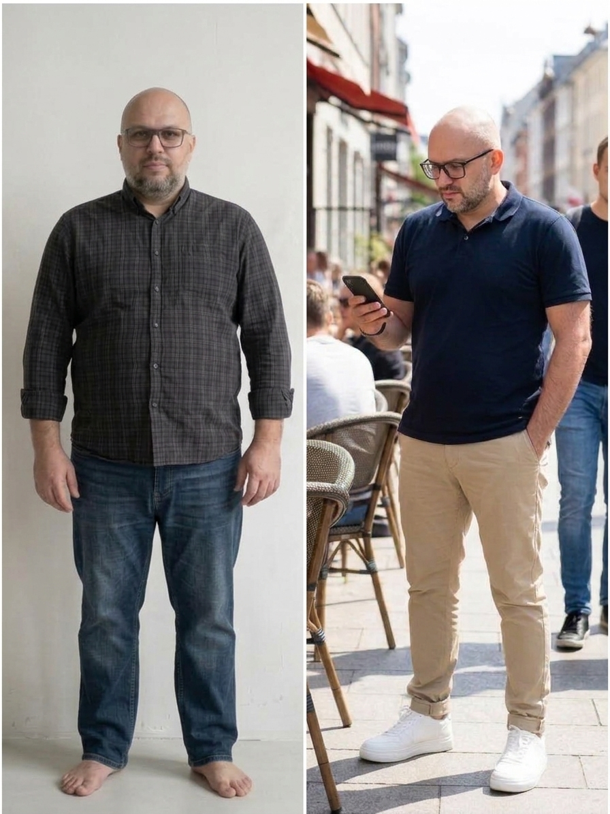

Головна причина набору ваги після 40 — це не відсутність сили волі, а заблокований інсуліном метаболізм. Заберіть покроковий гід Павла Шеметова (-22 кг у 42 роки) та дізнайтеся, як запустити жироспалення без голоду.

Привіт! Я — Павло Шеметов, метаболічний архітектор. У 42 роки я важив на 22 кг більше, прокидався втомленим і безуспішно намагався схуднути на дієтах. Кожен зрив супроводжувався соромом, поки я не зрозумів головне: після 40 років справа взагалі не в силі волі.
Головне відкриття: ваше тіло — це не калькулятор калорій, а складний гормональний механізм.
Хочете переконатися, що це реальний результат і стежити за моїм щоденним блогом?
Перейти в мій Instagram @shemetov.metabolicПри різкому голоді тіло спалює м'язи, а жир береже на «чорний день».
Ваш метаболізм сповільнюється на 15-20%, роблячи кожну наступну дієту марною.
Високий інсулін «заварює» двері до жирових депо наглухо.